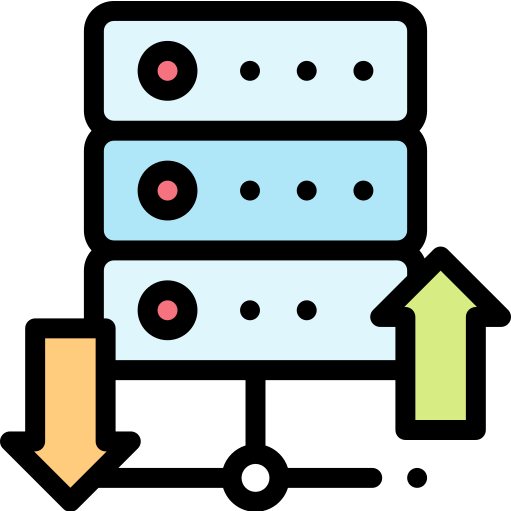
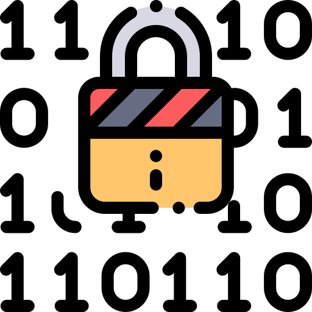
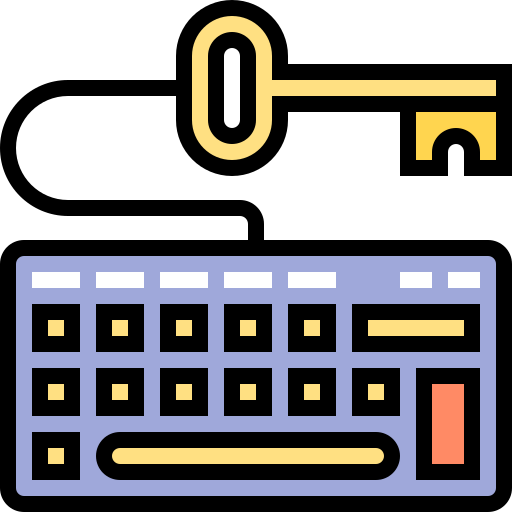

O QUE É SSH ?
SSH ou Cápsula de Segurança é um protocolo de administração remota que permite aos usuários controlar e modificar seus servidores pela Internet. O serviço foi criado como uma substituição segura para o Telnet não criptografado que usa técnicas criptográficas para garantir que todas as comunicações do servidor remoto aconteçam de forma criptografada. Ele fornece um mecanismo para autenticar um usuário remoto, transferindo entradas do cliente para o servidor de hospedagem e retransmitindo a saída para o cliente.
E O TELNET ?
Telnet é um protocolo cliente-servidor usado para permitir a comunicação entre computadores ligados numa rede (ex: rede local / LAN / Internet), baseado em TCP.
Telnet é um protocolo utilizado na comunicação entre computadores remotamente (à distância). Vem sendo usado gradualmente substituído pelo SSH, cujo conteúdo é criptografado antes de ser enviado.
PARA QUE SERVE ?
O acesso SSH é usado por administradores de rede para gerenciar sistemas e aplicativos de forma remota. Ou seja, longe do computador ou servidor por onde se está acessando esses sistemas virtuais.
Com o acesso SSH, o usuário pode fazer login em um outro computador por uma rede protegida por criptografia. Desse jeito, ele pode executar comandos, mover e editar arquivos de um local para outro sem riscos de interceptação por agentes maliciosos.
Essa tecnologia oferece uma interface baseada em texto para criar o acesso Shell remoto. Essa interface é o próprio terminal Shell, que executa os comandos digitados e faz a ponte entre a máquina do usuário e o servidor remoto.


COMO FUNCIONA ?
Se você estiver usando Linux ou Mac, então usar SSH é muito simples. Se você usar o Windows, você precisará utilizar um clienteSSH para abrir conexões desse tipo. O cliente SSH mais popular é o PuTTY, que você pode aprender mais sobre aqui.
Para usuários de Mac e Linux, dirija-se ao seu programa de terminal e siga o procedimento abaixo:
ssh {user}@{host}
O comando da tecla SSH instrui o sistema que deseja abrir uma Conexão de Shell segura criptografada. O {User} representa a conta à qual você deseja acessar. Por exemplo, você pode querer acessar o usuário raiz, que é basicamente sinônimo, para o administrador do sistema, com direitos completos para modificar qualquer coisa no sistema. O {Anfitrião} refere-se ao computador ao qual você deseja acessar. Este pode ser um endereço IP (por exemplo, 244.235.23.19) ou, um nome de domínio (por exemplo, www.xyzdomain.com). Quando você pressionar enter, você será solicitado a inserir a senha da conta solicitada.
TECNICAS DE CRIPTOGRAFIA !
A vantagem significativa oferecida pelo SSH sobre seu antecessor está no uso da criptografia para transmitir de forma segura, uma informação entre o cliente e o servidor de hospedagem. O Host se refere ao servidor remoto que você está tentando acessar, enquanto o cliente é o computador que você está usando para acessar o servidor.
Há três tecnologias de criptografia usadas pelo SSH:

CRIPTOGRAFIA SIMÉTRICA
É a forma em que a criptografia utiliza uma chave secreta para codificar e decodificar uma mensagem do cliente e do servidor. De forma efetiva, qualquer mensagem pode ser decodificada, assim como, ser transferida.

CRIPTOGRAFIA ASSIMÉTRICA
Ao contrário da criptografia simétrica, a criptografia assimétrica usa duas chaves separadas para criptografia e descriptografia. Essas duas chaves são conhecidas como chave-pública e chave-privada. Juntas, as chaves são conhecidas como pública-privada e formam um par de chaves.
HASHING
One-way hashing é mais uma forma de criptografia usada em conexões seguras de Shell. As funções do one-way-hash diferem das duas formas de criptografia acima mencionadas, no sentido de que elas nunca devem ser descriptografadas. Eles geram um valor exclusivo, um sentido único de comprimento fixo para cada entrada que não mostra nenhuma tendência clara que possa ser explorada. Isso torna praticamente impossível de ser feita a reversão.